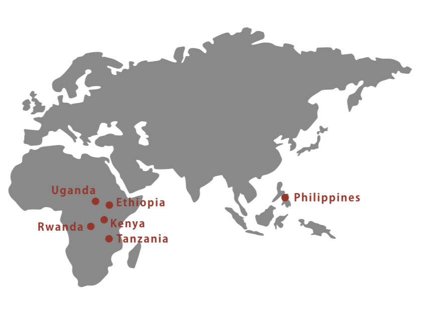

千葉大学公認国際ボランティア系サークル Fabric

皆様からお預かりした寄付金は、開発途上国の子どもたちの学校給食になっています。支援国では、学校給食を届ける仕組みと実績を持つ団体と協力して支援を行っています。
TABLE FOR TWOでは、給食事業を運営するための資金提供と教育支援を行い、軌道に乗り定着した後は、現地の人たちが自分たちの力で給食事業を続けていくことを目指しています。そのため、できる限り資材の調達や調理を現地の人、特に子どもたちの両親の協力を得て実施するようにしています。 皆様からの寄付金は、給食の原材料費に加えて、両親への給食運営の指導トレーニングを行う管理者の人件費、給食を作るのに必要な調理器具の購入や運搬にかかる費用、モニタリング費用など、給食事業を運営するために必要となる費用に使用させていただいております。（※費用の詳細は地域によって異なります）また、支援先地域の持続可能な開発のために、学校菜園や地域菜園の設置とトレーニングの実施や、地元の零細農家の農業生産性向上のための支援プログラムも手がけています。これらのプログラムの運営には、使途を菜園・農業支援に指定された寄付金を充てています。（公式HPより）
TFTでは、東アフリカに位置するウガンダ、ルワンダ、エチオピア、タンザニア、ケニア、フィリピンの6か国(下図)で、学校給食プログラムと菜園・農業生産性向上プログラムの支援を行っています。学校給食プログラムの支援地域の選定にあたっては、以下の三点を基準とし、評価し選択しています。
・極度の貧困や栄養不良が深刻な問題となっていること
・政情が安定していること
・給食事業の管理・報告体制が整備されていること
ウガンダは、1980年代後半から世界銀行やIMFからの支援を得た結果、サハラ以南アフリカの中で最も経済成長率の高い国の一つへ成長しています。学校の敷地や地域の共有スペースに菜園を設置し、生徒や地元住民へのトレーニングを実施しています。
エチオピアは、およそ3,000年以上の歴史を持つアフリカで最も古い独立国であり、世界で最も貧しい国の1つに数えられています。首都アディスアベバ近郊の小学校で、約1,000人の子どもを対象に給食プログラムを支援しています。またエチオピアの複数地域で学校・コミュニティ菜園の設置を支援しています。
ケニアは東アフリカ諸国への物流や人の移動の玄関口でもあります。コーヒーや生花栽培など、農業が主要な産業です。天水に依存する農家が多く、旱魃などの際には深刻な影響を受けてしまいます。世界で2番目に大きい淡水湖ビクトリア湖に浮かぶムファンガノ島とルシンガ島の幼稚園と小学校で、2011年秋から給食を提供し、ケニア国内の複数地域で学校・コミュニティ菜園の設置を支援しています。
アフリカでも有数の大自然に恵まれ、豊富な観光資源を誇るタンザニアは、近年は経済的にも成長を続けています。一方で、農村部における貧困率は依然として高いままです。ザンジバル諸島の特に貧困家庭が多い2つの地域の小学校9校で学校給食を支援し、タンザニア本土では学校・コミュニティ菜園の設置を支援しています。
ルワンダは、「千の丘の国」と呼ばれる自然豊かな内陸国です。南西部ニュングエ国立公園内に隣接するバンダ村で、幼稚園3園と小・中学校2校で、およそ2,300人の生徒に給食を支援しています。またルワンダの複数地域で学校・コミュニティ菜園の設置を支援しています。
フィリピンは、7,109の島々から成る東南アジアの島国であり、ASEAN唯一のキリスト教国です。首都マニラから約130kmから離れたバライバイ地域のピナツボ山噴火被災者再定住区の小学校で、2014年6月から学校給食プログラムを支援しています。
最新の活動や学食提供メニューはこちらから確認できます。
千葉大学公認国際ボランティア系サークル Fabric